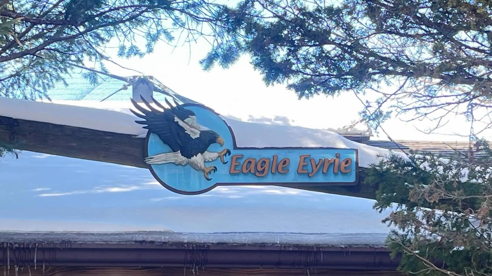

Eagle Eyrie
Cincinnati Zoo & Botanical Garden · Photo Tour #14

For all my bird lovers, you're in luck again. In 1970 the Cincinnati Zoo opened a 170-foot-long, 72-foot-tall, 50-foot-wide flight cage on a steep hill — at the time, the largest flight cage in North America.
Our first stop is a giant bird from the Andean mountains, the Andean condor. People thought they were hunting their livestock, so they would shoot and poison them, and they ended up on the endangered species list; since 1989, AZA zoos have prepared condor chicks to be released into the wild, and so far about 80 were released.
Next, from the Andes to the Russian Far East, the beautiful Steller's sea eagle. At one time Cincinnati Zoo was the first and only place to have a successful breeding program, with around 12 hatchlings. When I first visited Cincy in 2006, I had never seen a habitat like this — it's still one of my favourite raptor enclosures.
Louie posted this on Facebook — open the original post → · same tour on Instagram